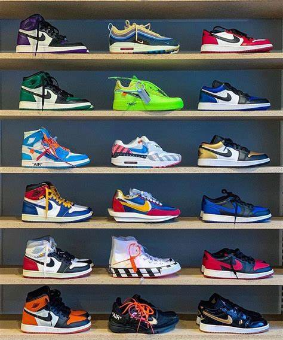

Low-top sneakers born in the 1970s blend fashion and sports history
Initially designed as casual alternatives to iconic models they quickly
became symbols of streetwear Today these shoes are a fashion
staple,comfortable and casually elegant appeal.
×
High-top sneakers emerged in the 1980s as a symbol of bold style
Featuring a silhouette that wraps around the ankle
these shoes offera unique blend of support urban flair
adding a distinctive touch to any casual outfit.
×

Athletic sneakers are crafted to seamlessly blend performance
Featuring cutting-edge technology, and dynamic designs
shoes are the ideal for sports enthusiasts and fashion aficionados
fusion of functionality and aesthetics.
×
Casual sneakers seamlessly blend modern style with optimal comfort embodying
the essence of laid-back chic. Perfect for any casual occasion
these versatile shoes add a touch of elegance to every step.
×
Originally simple athletic shoes sneakers have
transformed into a statement of style and identity
blending innovation and avant-garde design
to leave an indelible mark on fashion.


.png)